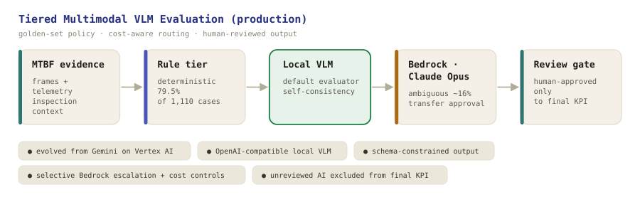

Highlights
Vertex AI · Gemini 2.5 Flash
Multimodal service (vertexai=True): image frames + structured metadata + an inspection manual.
Structured output
Enforced JSON schema — FP/TP, category, confidence, and step-by-step reasoning.
Batched async + dedup
Per-request token tracking; batched async processing with deduplication (~40% fewer API calls).
Human-in-the-loop
Model assists, human makes the final call — running in real customer-release evaluation (MTBF).
